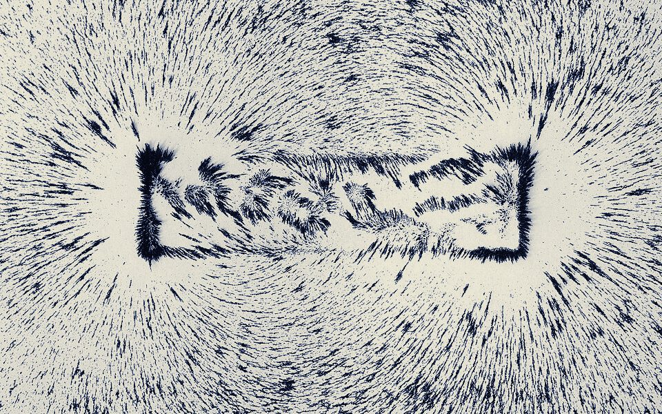
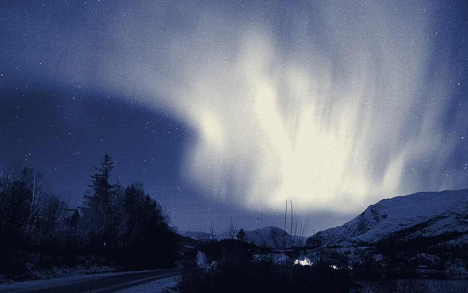
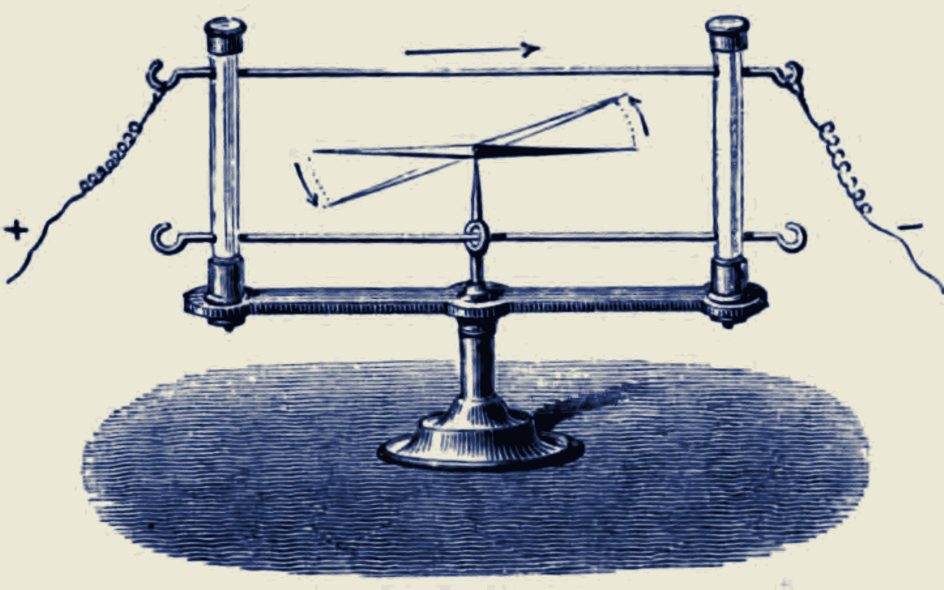
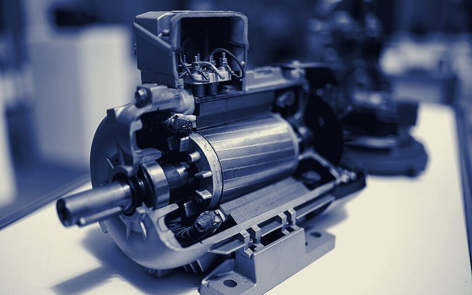
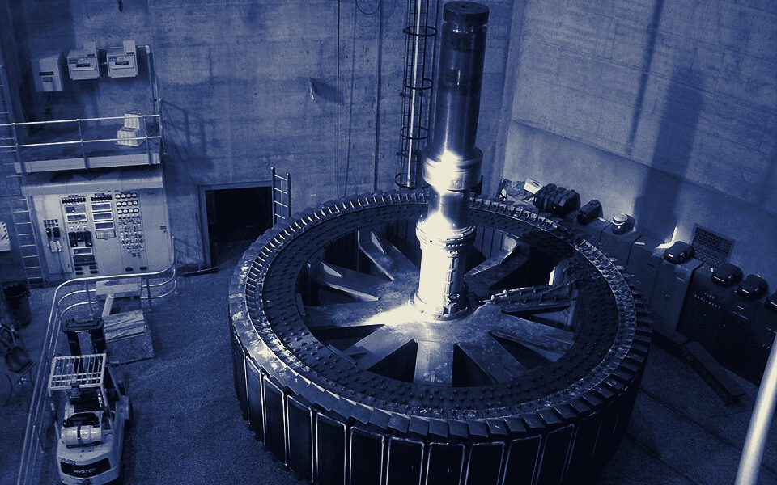
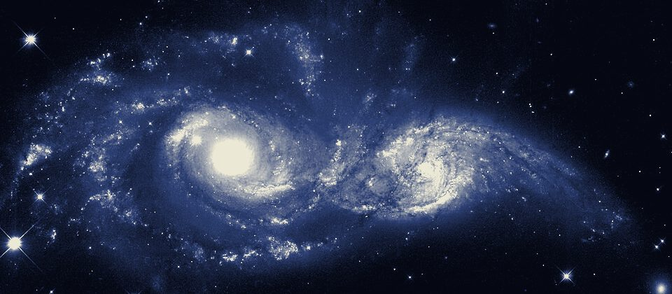

Kemagnetan
Kutub N dan S tidak bisa dipisahkan. Medan magnet B diukur dalam tesla, dan Bumi sendiri adalah magnet dengan medan sekitar 50 μT.

Fisika Dasar · Sains Data
Satu alur yang dimulai dari Oersted: arus menghasilkan magnet, magnet yang berubah menghasilkan listrik, dan keduanya bersama membentuk gelombang yang kita sebut cahaya.
↓ pindah bagian F layar penuh
Berawal dari empat ilmuwan
Empat ide dasar

Kutub N dan S tidak bisa dipisahkan. Medan magnet B diukur dalam tesla, dan Bumi sendiri adalah magnet dengan medan sekitar 50 μT.

B = μ0I / 2πr kawat lurus panjang
Oersted (1820): arus listrik menghasilkan medan magnet.

F = qvB sin θ membelokkan muatan, tidak melakukan usaha
Dasar motor listrik, spektrometer massa, dan aurora.

ε = −N dΦ/dt Faraday, dengan arah arus dari hukum Lenz
Perubahan fluks menimbulkan GGL: generator, transformator, kompor induksi.
Persamaan Maxwell
Muatan adalah sumber medan listrik.
Tidak ada monopol. Garis medan magnet selalu tertutup.
Medan magnet yang berubah menghasilkan medan listrik.
Arus dan medan listrik yang berubah menghasilkan medan magnet.
Gelombang elektromagnetik
Spektrum elektromagnetik
Klik salah satu blok warna di atas untuk melihat rentang panjang gelombang dan contohnya.
Kaitan dengan sains data
Band cahaya tampak dan inframerah dipakai untuk analisis tanaman dan cuaca.
Magnetometer, sensor Hall, RFID, dan NFC menghasilkan aliran data dari efek magnetik.
Kekuatan sinyal Wi-Fi atau 5G bisa dipakai untuk menentukan posisi di dalam ruangan.
MRI memakai medan magnet kuat dan gelombang radio untuk membentuk citra.
Spektrum cahaya menjadi fitur untuk mengklasifikasikan material.
Sinyal diubah dari domain waktu ke domain frekuensi, konsep yang berakar dari c = λf.
Jejak penemuan
FAQ
Jawaban singkat untuk hal-hal yang biasanya bikin bingung di bab ini.
Setiap potongan magnet tetap punya kutub N dan S. Persamaan Gauss untuk magnet mengatakan hal yang sama: tidak ada monopol, dan garis medan magnet selalu tertutup.
Gayanya selalu tegak lurus terhadap kecepatan, jadi hanya mengubah arah gerak muatan, bukan lajunya.
Pada daya yang sama, tegangan tinggi berarti arus kecil, sehingga rugi daya I²R di kabel kecil. Transformator menaikkan dan menurunkan tegangan, tetapi hanya bekerja pada arus bolak-balik.
Bukan. Suara adalah gelombang mekanik yang butuh medium, sedangkan gelombang elektromagnetik bisa merambat di vakum.
Sinar-X dan gamma termasuk radiasi pengion: energi fotonnya cukup untuk merusak molekul. Gelombang radio dan mikro berenergi jauh lebih rendah.
Transformasi Fourier mengubah sinyal dari domain waktu ke domain frekuensi. Gagasan frekuensi itu berakar dari hubungan c = λf.

Kesimpulan